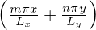
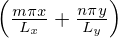

![∑∞ ∞∑
G(x,y) = cmn [cosα + isinα ]
m= −∞ n= −∞ ( )
∑∞ ∞∑ ---1--∫ Ly ∫ Lx
= 4LxLy − Ly −Lx G (x,y)cos αdxdy [cosα + isinα]
m= −∞ n= −∞ ( ∫ ∫ )
∑∞ ∞∑ ---1-- Ly Lx
+ 4LxLy − Ly −Lx G (x,y)sinαdxdy [− icosα + sin α],
m= −∞ n= −∞](fourier_analysis134x.png)
The formula for expanding a real-valued two-dimensional function G(x,y) in terms of basis functions cos and sin can be readily recovered from Eqs. (120) and (119). For notation ease, define
|
| (121) |
Then Eq. (120) is written as
|
| (124) |
and the other coefficients given by
|
| (125) |
|
| (126) |
Here the range of m is reduced to [0 : +∞]. In this case, we have an edge case, G00c, that needs special treatment. We see that allowing the index runing from −∞ to +∞ has the advantage of that there are no edge cases that needs special treatment.
![∞∑ ∑∞
G (x,y) =
m= −∞ n=−∞
( 1 ∫ Ly∫ Lx )
[ ------ G(x,y)cosαdxdy cosα
( 4LxLy −Ly −Lx )
1 ∫ Ly ∫ Lx
+ 4LxLy- G (x,y)sinαdxdy sin α]. (122)
−Ly −Lx](fourier_analysis135x.png)